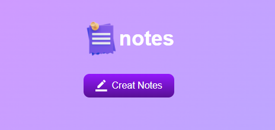

Note App - דף משימות
דף משימות הוא כלי ניהול זמן ומשאבים המשמש לעיצוב ועקיפת משימות בצורה מסודרת וממודרגת. הוא מאפשר לך לרשום, לסדר ולעקוב אחרי משימות שונות שצריך להשלים במהלך היום, השבוע, החודש או בכל תקופת זמן אחרת


Local Storage

